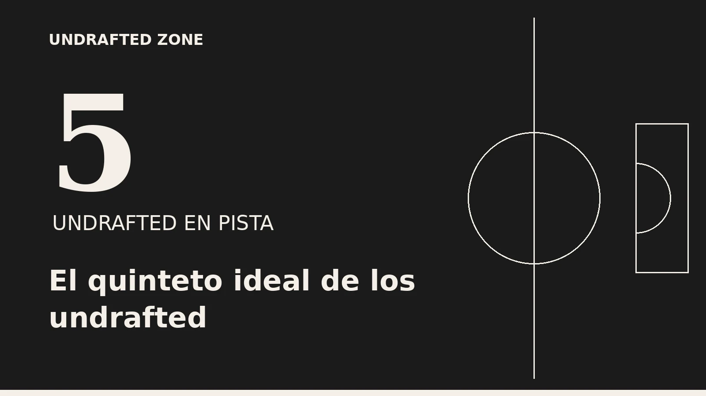

El quinteto ideal de los undrafted de la historia de la NBA
Cinco undrafted para un quinteto que se entiende en pista, con un banquillo que aguanta los minutos difíciles. Base, escolta, alero, ala-pívot y pívot.

Después del ranking de los diez mejores undrafted, la pregunta lógica es otra: si pudieras poner a cinco de ellos juntos, ¿quiénes saldrían? Es el ejercicio más divertido de la serie, porque obliga a decidir no solo quién es mejor, sino quién encaja con quién. Un quinteto no es la suma de diez currículums: es un equipo que tiene que jugar, defender y repartir el balón entre cinco personas.
Cómo lo he armado
Parto de las mismas cuatro reglas del ranking anterior: impacto en la cancha, títulos, longevidad y cuánto sorprendió. Pero añado una quinta, que es la que hace un quinteto distinto de una lista: que los cinco se entiendan en pista. Un pívot defensivo como Wallace necesita un base que no pierda el balón y un alero que tire, y eso condiciona toda la elección.
Para medir el valor de un jugador que nadie eligió, conviene recordar cómo se paga a los que sí fueron elegidos, según la escala de novatos. Hay una regla que he respetado sin excepción: solo entran jugadores de la lista de undrafted, y solo con los datos que manejo. Nada de años de títulos que no estén verificados, nada de logros que no figuren en el material. Si alguien echa de menos a un nombre, la respuesta es que no lo he podido comprobar, y no que no valga.
La base: Fred VanVleet
VanVleet es el base del quinteto. Fue campeón de la NBA y All-Star, aunque sin años en mi fuente, y tiene en su currículum dos veces Jugador del Año de la MVC y el título de la D-League en 2017. Sigue en activo, y eso juega a su favor: es el jugador del grupo que todavía puede crecer.
¿Por qué él y no Caruso? Porque el base de un quinteto tiene que tomar decisiones de ataque además de defender bien. Caruso es el mejor defensor del perímetro, pero VanVleet ofrece más en las dos mitades de la cancha, y el equipo necesita a alguien que conduzca el juego cuando los rivales cierran el carril.
El escolta: John Starks
Starks es el escolta por carácter y por historia. Sexto Hombre del Año en 1996, segundo equipo del quinteto defensivo en 1992, All-Star en una temporada que el registro no fija, y campeón de la NBA sin año en mi fuente. Ganó además la Copa de la NBA en 2025.
Starks no es un tirador de precisión, y eso lo pone a prueba al lado de un base que necesita espacio. Pero su capacidad para atacar el aro y su intensidad defensiva son lo que el quinteto necesita para no regalar partidos en el primer cuarto.
El alero: Bruce Bowen
Bowen es el alero que el equipo necesita para tener un defensor de primer nivel en el perímetro. Tres veces campeón, cinco veces en el primer quinteto defensivo entre 2003 y 2007, y tres veces en el segundo entre 2000 y 2002. El número 12 de los Spurs está retirado.
Lo elijo sobre Hawkins para el alero por una razón de equilibrio. Hawkins tiene un currículum ofensivo más alto, pero el quinteto necesita a alguien que marque al mejor rival del otro lado, y Bowen lo ha hecho durante años. Hawkins entra como ala-pívot, donde su versatilidad le sirve más.
El ala-pívot: Connie Hawkins
Hawkins es el jugador más difícil de encajar, porque su nivel ofensivo le pediría ser el titular. Pero en este quinteto su papel es el de ala-pívot con capacidad de ser el segundo anotador. Fue MVP de la ABA en 1968, campeón de la ABA ese mismo año, cuatro veces All-Star de la NBA entre 1970 y 1973, y estuvo en el primer equipo All-NBA en 1970.
Su título es de la ABA y no de la NBA, y eso hay que decirlo en el texto. Pero su capacidad para jugar en varias posiciones le permite a Wallace tener un compañero que puede estar en cualquiera de los dos lados de la cancha.
El pívot: Ben Wallace
Wallace es el pívot del quinteto por la misma razón que es el número uno del ranking: cuatro veces Defensor del Año, cinco veces en el primer quinteto defensivo entre 2001 y 2005, dos veces líder en rebotes (2002 y 2003) y líder en tapones en 2001. Es campeón, aunque sin año en mi fuente.
Un pívot que defiende así puede dejar a sus compañeros tomar riesgos fuera del aro. Ese es el papel que el quinteto necesita: alguien que haga que el resto del equipo pueda atacar sin pensar en la defensa del poste.
El banquillo: los que entran cuando el partido se rompe
Un quinteto ideal necesita un banquillo que aguante, y aquí es donde la lista de undrafted da lo mejor de sí. Udonis Haslem es el primer relevo de los hombres grandes: tres veces campeón, segundo equipo del quinteto de novatos en 2003 y número 40 retirado por el Heat. Su aportación es la del jugador que sabe qué hacer en cada minuto.
Alex Caruso es el relevo del base y del escolta. Campeón dos veces (sin años en mi fuente), primer quinteto defensivo en 2022 y segundo en 2023. Cuando el partido necesita a alguien que robe un balón o cierre un cuarto sin fallos, Caruso es la respuesta.
Darrell Armstrong completa el banquillo con su experiencia en tres ligas. Sexto Hombre del Año y Jugador que más mejoró de la liga en 1999, máximo anotador de la liga española en 1995 y campeón como entrenador ayudante de la NBA en 2011. Y Avery Johnson, que era el base de la época de los Spurs, entra como entrenador de la rotación: campeón (sin año en mi fuente), Entrenador del Año en 2005 y número 6 retirado por el equipo.
Quién se queda fuera del quinteto
Jeremy Lin es el nombre más difícil de dejar fuera. Campeón de la NBA en 2019 y campeón de la liga taiwanesa en 2025, pero su impacto en la NBA fue más breve que el de los cinco del quinteto. Naz Reid, Sexto Hombre del Año en 2023, podría entrar en el banquillo si se escribe una segunda versión. Austin Reaves, campeón de la Copa de la NBA en 2023, tiene un perfil de escolta que el quinteto ya cubre con Starks. Y Covington, primer quinteto defensivo en 2017, cubre un papel de alero defensivo que el equipo ya tiene con Bowen.
Los picks tardíos que se acercan a estos nombres se repasan en los picks del 21 al 30. Moses Malone tampoco entra. Fue elegido en el draft de la ABA en 1974, así que no es undrafted según la lista que uso, y eso lo deja fuera por definición, aunque su carrera mereciera una discusión propia.
Qué hace a este quinteto distinto
Lo que me gusta de este quinteto es que no es el de las estrellas. No hay un anotador de 30 puntos, ni un jugador que llene la portada por sí solo. Hay cinco piezas que se entienden: un base que decide, un escolta con carácter, un alero que defiende a los mejores, un ala-pívot que puede jugar en varias posiciones y un pívot que cambia el partido en defensa.
Es un quinteto que se construye con sacrificio, y ese es el mensaje que la lista de undrafted deja. Ninguno de los cinco llegó al máximo nivel por la vía fácil, y todos saben qué hacer cuando nadie les dice qué hacer.
Lo que queda por decidir
Este cinco es una primera propuesta, y cualquier cambio de plantilla lo condiciona el tope salarial. Alejandro decide el quinteto y el banquillo, porque la elección depende de un criterio que no es solo estadístico: quién es el mejor base, quién defiende mejor, quién encaja con quién. Si cambias un criterio, cambia el quinteto, y eso es lo interesante del ejercicio.
Preguntas frecuentes
¿Por qué Connie Hawkins no es el alero?
Porque el quinteto necesita un defensor de primer nivel en el perímetro, y Bowen lo ha sido durante años. Hawkins entra como ala-pívot, donde su versatilidad encaja mejor.
¿Cuál es el jugador más sorprendente del quinteto?
Starks. Partió de una distancia enorme y llegó a Sexto Hombre del Año y a campeón de la NBA sin año en mi fuente.
¿Hay títulos de la ABA en el quinteto?
Sí. Connie Hawkins fue campeón de la ABA en 1968. El texto lo dice, porque no es lo mismo que un título de la NBA.
¿Por qué no aparecen años de títulos?
Porque en el material que manejo algunos años no están verificados. Prefiero decir «campeón» antes que escribir un año que no puedo comprobar.